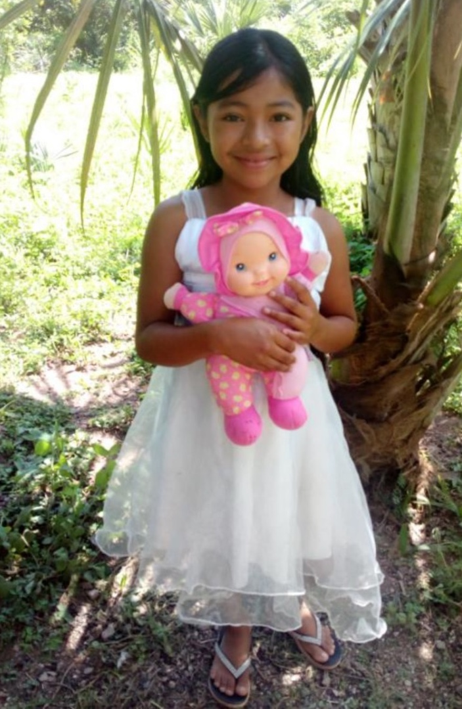
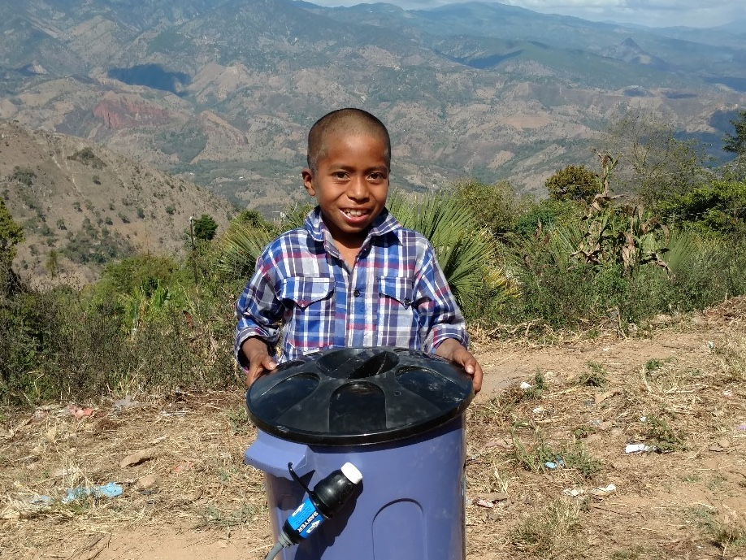
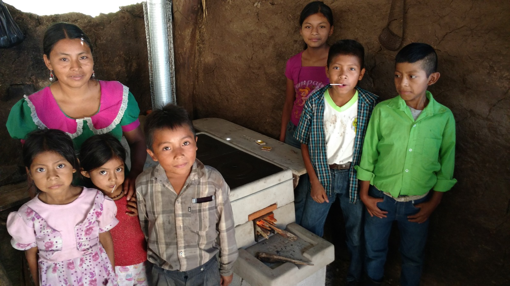
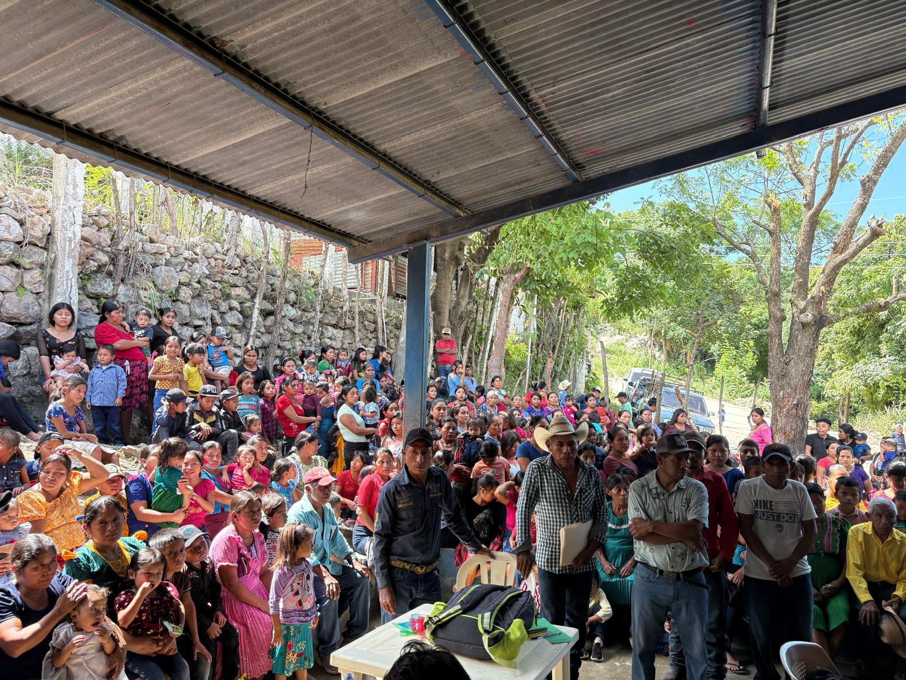

Outreach for World Hope
Bringing Life and Hope to Remote Villages of Guatemala
Bringing Life and Hope to Remote Villages of Guatemala
Outreach for World Hope (OWH) is a Christian non-profit organization serving the remote mountain villages of Eastern Guatemala. For over twenty years, we've partnered with local communities and churches to bring practical, life-changing support to families living in extreme poverty.
Our vision: Every child deserves food, clean water, safety, and a future filled with hope.
"If someone who has worldly means sees a brother in need and refuses him compassion, how can the love of God remain in him? Children, let us love not in word or speech but in deed and truth."
In the remote mountains of Eastern Guatemala, families face daily struggles for survival:
⚠️ Without intervention, children die from hunger and preventable sickness every year.
"Truly I tell you, whatever you did for one of the least of these brothers and sisters of mine, you did for me."
Miguel was found in a state of severe malnutrition and was enrolled without a sponsor so that his life could be saved. His challenges are numerous as his mother died two years ago and, during his hospital stay for nutritional rehabilitation, he was found to be HIV positive. His father and siblings were subsequently tested and his father was also found to be HIV positive.
OWH social workers are providing weekly transportation to Guatemala City where the two are receiving antiretroviral medications which will prolong their lives. After only one and a half months in the OWH sponsorship program, Miguel started to gain weight and walk on his own. His siblings are also receiving food, vitamins, and medical care from the ministry and will be cared for in the event that the father is no longer able to care for them.

Severe malnutrition, unable to walk

Gaining weight, walking, full of life
💚 This is why we protect the little ones. This is why your support matters.
"Mauricia was eight years old when we met her. She was starving, her hair had fallen out, and her chances of survival were only 10%. Today, through child sponsorship, she is thriving, in school, and full of life."
"Little Darwin was only 3 pounds when he was born, and he had dropped to 2 pounds when we saw him. He only had a matter of days or hours left in his life at that point, but he was a fighter! Through the OWH sponsorship program, he has since grown to be a vibrant, happy, strong boy. It has been a joy to visit him during our mission trips over the years."
"Religion that God our Father accepts as pure and faultless is this: to look after orphans and widows in their distress and to keep oneself from being polluted by the world."
Through partnership with local communities, we provide comprehensive support:
Monthly food packages, vitamins, medical care, and educational support transform lives for just $34/month per child.
Mobile clinics bring healthcare directly to villages with no access to medical facilities.
Each bucket water filter provides up to 100,000 gallons of safe, clean drinking water for an entire family—preventing disease and saving lives.
Vented stoves replace dangerous indoor open fires, preventing lung damage, reducing burns, and keeping homes cooler while using 90% less wood.
Classrooms, school supplies, teacher training, and scholarships give children hope for a brighter future.
Seeds, training, and farming methods help families grow their own food and build long-term stability.
➡️ Every gift makes a difference. Every child matters.
"And let us not grow weary of doing good, for in due season we will reap, if we do not give up."
The reach of Outreach for World Hope extends far beyond individual families. When we arrive in a village, something remarkable happens: people walk for miles—sometimes hours—from surrounding communities to participate in our programs.
These gatherings are a testament to the desperate need and the transformative power of hope. Families who have no other access to medical care, clean water, or nutritional support make extraordinary efforts to reach our mobile clinics and distribution centers.
The impact ripples outward: one water filter protects an entire household, one stove changes a family's health trajectory, one sponsored child brings hope to an entire community.
This is why your support matters so profoundly—because every gift you give multiplies as it spreads from family to family, village to village.
Transform a life with monthly support of just $34/month. Your sponsorship provides:
Your donation provides immediate, life-saving support:
Outreach for World Hope is committed to transparency and faithful stewardship:
"The generous will themselves be blessed, for they share their food with the poor."
Every child deserves food, clean water, safety, and a future. Because of you, families in remote Guatemala are finding hope again.
👉 Your generosity brings life-saving water, safe homes, and a brighter tomorrow.
Thank you for standing with Outreach for World Hope. Together, we are changing lives!